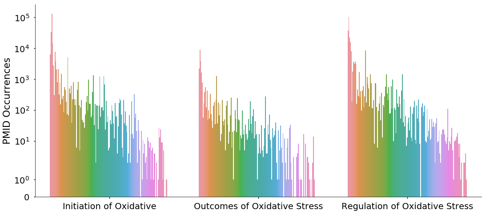

This file creates two outputs: output/metadata_pmid2count.json and output/metadata_pmid2count.json which are used as the inputs for running the final score calculation in caseOLAP.
from elasticsearch import Elasticsearch
from elasticsearch_dsl import Search, Q
import pandas as pd
import numpy as np
import matplotlib.pyplot as plt
import seaborn as sns
import json
Importing oxidative stress chemical PMID occurrences
- PMID occurrence list generated in
chemical_drug_elastic_occurance.ipynb
ox_cat_df = pd.read_csv('output/Chemical_PMID_occurances.csv')
print(ox_cat_df.shape)
ox_cat_df.head()
(3291433, 5)
|
Article MeSH |
PMID |
category |
chemical |
MeSH |
| 0 |
['Alcohols', 'metabolism', 'toxicity', 'Aldehy... |
24852702 |
Initiation of Oxidative |
4-hydroxy-2-nonenal (4-HNE) |
Aldehydes |
| 1 |
['Adult', 'Aldehydes', 'metabolism', 'Case-Con... |
24854020 |
Initiation of Oxidative |
4-hydroxy-2-nonenal (4-HNE) |
Aldehydes |
| 2 |
['Acetylcysteine', 'pharmacology', 'Aldehydes'... |
24854122 |
Initiation of Oxidative |
4-hydroxy-2-nonenal (4-HNE) |
Aldehydes |
| 3 |
['4-Butyrolactone', 'chemistry', 'Aldehydes', ... |
24877583 |
Initiation of Oxidative |
4-hydroxy-2-nonenal (4-HNE) |
Aldehydes |
| 4 |
['Absorption, Physicochemical', 'Acetonitriles... |
24878441 |
Initiation of Oxidative |
4-hydroxy-2-nonenal (4-HNE) |
Aldehydes |
pmid_per_cat_count = pd.DataFrame(ox_cat_df.groupby('category').PMID.nunique())
pmid_per_cat_count
|
PMID |
| category |
|
| Initiation of Oxidative |
405009 |
| Outcomes of Oxidative Stress |
117386 |
| Regulation of Oxidative Stress |
1163548 |
Finding drug occurrences for each oxidative stress category
- Loads
output/Drug_PMID_occurances.csv file generated in chemical_drug_elastic_occurance.ipynb
- merges with PMID occurances of oxidative stress categories defined above in variable
ox_cat_df
drug_occurance_df = pd.read_csv('output/Drug_PMID_occurances.csv')
drug_occurance_df['PMID'] = drug_occurance_df['PMID'].astype(int)
drug_occurance_df.head()
|
MeSH |
PMID |
abstract |
count |
title |
drug |
| 0 |
['Acarbose', 'therapeutic use', 'Asian Contine... |
24853116 |
to demonstrate if weight loss achieved with ac... |
14 |
Acarbose monotherapy and weight loss in Easter... |
acarbose |
| 1 |
['Asteraceae', 'chemistry', 'Astragalus Plant'... |
24863354 |
the incidence of diabetes has increased consid... |
2 |
Comparative evaluation of polysaccharides isol... |
acarbose |
| 2 |
['Acarbose', 'therapeutic use', 'Aged', 'Asian... |
24866329 |
postprandial hyperglycemia and blood glucose f... |
10 |
Effects of sitagliptin or mitiglinide as an ad... |
acarbose |
| 3 |
['Blood Glucose', 'physiology', 'Cyclohexanes'... |
12918894 |
nateglinide is a new oral antidiabetic agent t... |
2 |
Nateglinide (Starlix): update on a new antidia... |
acarbose |
| 4 |
['Digoxin', 'adverse effects', 'blood', 'Drug ... |
20568489 |
digoxin has a narrow therapeutic margin and po... |
2 |
Digoxin: serious drug interactions. |
acarbose |
drug_ox_cat_df = ox_cat_df[['category', 'PMID']].drop_duplicates().merge(
drug_occurance_df,
validate='m:m',
how='inner',
)
# Drugs listed per category
pd.DataFrame(drug_ox_cat_df.groupby('category').drug.nunique())
|
drug |
| category |
|
| Initiation of Oxidative |
142 |
| Outcomes of Oxidative Stress |
133 |
| Regulation of Oxidative Stress |
146 |
# PMID Count per drug in a category
sns.set_context('talk', font_scale=1.5)
fig, ax = plt.subplots(figsize=(18,8))
ax.set_yscale('symlog')
sns.countplot(
x='category',
hue='drug',
data=drug_ox_cat_df,
ax=ax,
)
ax.legend().remove()
sns.despine()
ax.set_xlabel('')
ax.set_ylabel('PMID Occurrences')
Text(0, 0.5, 'PMID Occurrences')

# Print top drugs per category
pmid_per_drug_count = pd.DataFrame(drug_ox_cat_df.groupby(['drug','category']).PMID.nunique())
for cat, c_df in pmid_per_drug_count.reset_index().groupby('category'):
print(
cat,':',
', '.join(c_df.sort_values(by='PMID', ascending=False).head(n=10).drug.values),
'\n'
)
Initiation of Oxidative : nitric oxide, penbutolol, nitroglycerin, nitroprusside, tpa, adenosine, norepinephrine, dopamine, aspirin, captopril
Outcomes of Oxidative Stress : penbutolol, nitric oxide, tpa, nitroglycerin, adenosine, dopamine, captopril, aspirin, norepinephrine, isoprenaline
Regulation of Oxidative Stress : penbutolol, tpa, nitric oxide, nitroglycerin, adenosine, dopamine, heparin, norepinephrine, captopril, aspirin
- File containing a dictionary with structure:
{
"PMID": {
"Entity": "# of Occurences"
}
}
pmid2count = {}
# ONLY LOOKS AT PMIDS WITH BOTH A DRUG AND A CATEGORY ASSOCIATED
for (pmid, entity), p_df in drug_occurance_df.groupby(['PMID', 'drug']):
pmid = str(pmid)
if len(p_df['count'].values) > 1:
if len(p_df[['PMID', 'count']].drop_duplicates()) > 1:
print('ERROR LONG VALUE', p_df)
if not pmid in pmid2count.keys():
pmid2count[pmid] = {}
pmid2count[pmid][entity] = str(list(p_df['count'].values)[0])
with open('output/metadata_pmid2count.json', 'w') as pmid2count_json:
json.dump(pmid2count, pmid2count_json)
- File containing a dictionary with structure:
{
"Category": ["PMID",...]
}
long_short_category_map = {
"Initiation of Oxidative": "IoOS",
"Outcomes of Oxidative Stress": "OoOS",
"Regulation of Oxidative Stress": "RoOS"
}
drug_ox_cat_df['category_short'] = drug_ox_cat_df['category'].map(long_short_category_map)
cell2pmid = {}
for category, c_df in drug_ox_cat_df.groupby('category_short'):
cell2pmid[category] = list(c_df.PMID.astype(str).unique().values)
with open('output/metadata_cell2pmid.json', 'w') as cell2pmid_json:
json.dump(cell2pmid, cell2pmid_json)